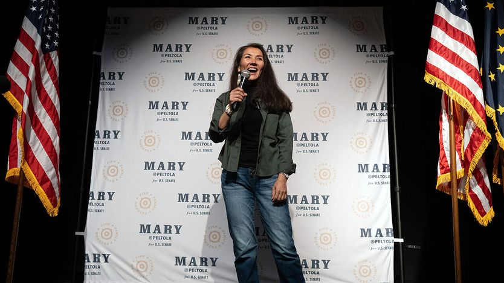

想翻转参议院？试试鱼和亲和力
Want to flip the Senate? Try fish and charisma
阿拉斯加的民主党人希望，个人魅力、独特的政治生态和总统的失策能帮他们拿下一个关键席位

- 背景：今年11月美国举行中期选举，改选全部众议员和约三分之一的参议员，民主党要夺回参议院，就得拿下阿拉斯加这类共和党占优州。这个州人口不到74万，独特之处是把「无党派初选」与「排序复选制」（选民给候选人排序，末位者出局后其票按次转移）结合，党派标签作用小得多。
- 共和党现任参议员沙利文指控对手会联合国会里的反能源团体「关掉阿拉斯加的能源」。民主党挑战者佩尔托拉（原住民、前众议员）一边发支持石油的广告、承诺与特朗普合作开放更多土地，一边批评特朗普政策让当地油价涨到每加仑7.56美元，几乎是全美均值的两倍。
- 让选情胶着的另一个原因是联邦裁员。马斯克主导的「政府效率部」大砍联邦机构，阿拉斯加2025年流失近5%的联邦雇员，比例全美第三高；负责定捕鱼配额、看天气的国家海洋和大气管理局，在当地实验室流失三分之一科学家，渔民赖以作业的数据链条被打断。
- 作者的判断：佩尔托拉筹到的竞选资金是对手的两倍，并刻意把自己包装成「本地人」而非民主党人。在这种幅员辽阔、社区分散的州，候选人亲自到场争取选票，加上共和党选民也认她「是自己人」，说明决定胜负的可能不是党派，而是个人形象与州内议题。
鱼不会决定11月的中期选举，但也绝非无关紧要。民主党能否夺回参议院，很大程度上取决于阿拉斯加的这场选战；而后者又在很大程度上取决于鱼。9月12日，该州首场重要的参议员辩论在科迪亚克岛举行，议题几乎全是渔业。共和党现任参议员丹·沙利文（Dan Sullivan）认为，鲑鱼数量减少「大概是阿拉斯加面临的最重要问题」。民主党挑战者、原住民玛丽·佩尔托拉（Mary Peltola）穿着橡胶防水靴与他同台辩论。「鱼就在我的血液里，」她宣称。
阿拉斯加是个不寻常的州：面积超过得克萨斯州的两倍，人口却只有近74万，政治生态也与众不同。在最近一次总统选举中，特朗普以13个百分点的优势拿下该州，但这次的参议员选战却是五五开——《经济学人》的选举模型给佩尔托拉54%的胜算。这既得益于该州独特的政治文化，也得益于佩尔托拉个人的号召力；还有一个原因，是阿拉斯加受白宫政策冲击的程度格外大。民主党人希望这几重因素叠加，能把他们送上胜选的位置。
作为美国的第49个州，阿拉斯加长期以来偏爱温和派和跨党派合作。2010年，该州另一位共和党参议员、中间派人士莉萨·穆尔科斯基（Lisa Murkowski）在党内初选中输给一名茶党候选人，随后又通过「自填候选人」的方式赢得参议员席位——这是50多年来美国首次有候选人以这种方式当选。州议会的执政多数是一个由民主党、共和党和无党派人士组成的「三党联盟」。阿拉斯加也是全美唯一把无党派初选与排序复选制结合起来的州。「说到底，党派其实并不起什么作用，」州参议院议长加里·史蒂文斯（Gary Stevens）说。他本世纪初曾在州议会与佩尔托拉共事。
佩尔托拉正是这种环境的产物。2022年她首次在全州选举中获胜，击败前州长、共和党副总统候选人萨拉·佩林（Sarah Palin），成为阿拉斯加的联邦众议员。那一年，她与穆尔科斯基互相背书。沙利文的竞选广告试图把佩尔托拉描绘成「美国本土48州自由派」的傀儡，但她常常不买本党的账——全国步枪协会（NRA）2024年就支持过她。在一个对「真实感」渴求到让民主党人一度集体迷恋缅因州养蚝人格雷厄姆·普拉特纳（Graham Platner）的国家里，佩尔托拉的真实感多得用不完：她14岁就当上渔船船长；丈夫因驾驶的小型丛林飞机装载了过多驼鹿肉而坠机身亡。
佩尔托拉有时乐于站到总统一边，这对她有利。2014年首次当选的沙利文辩称，佩尔托拉和民主党占多数的参议院会限制北极地区的租让与钻探。「我的对手会与国会里那些反阿拉斯加能源的团体结盟，而他们只会做那一贯的事：关掉阿拉斯加的能源，」他在科迪亚克说。佩尔托拉则发布了一支支持石油的广告，承诺「与唐纳德·特朗普合作，开放更多土地、更多开发」。
但在其他议题上，佩尔托拉批评特朗普政策对阿拉斯加的影响——尽管她未必直接批评特朗普本人。虽然该州盛产石油，阿拉斯加人却尤其受高油价之苦：燃料贵，意味着偏远村庄取暖成本高、长距离运输货物和人员的成本高，捕鱼成本当然也高。燃料「是所有渔民的第一大成本」，佩尔托拉在科迪亚克对人群说。「因为伊朗战争，我们正在被油价挤出市场，也被挤出在阿拉斯加的生活。」该州今夏对乡村社区的调查显示，当地平均油价为每加仑7.56美元，几乎是全美平均水平的两倍。
阿拉斯加人还格外受了「政府效率部」（DOGE）拆解联邦官僚体系的冲击。阿拉斯加劳工与劳动力发展部估计，2025年该州流失了近5%的联邦雇员，占比之高仅次于马里兰州和新墨西哥州。目前阿拉斯加的联邦就业规模处于35年多来的最低水平。
还是以捕鱼为例。官员和渔民依赖美国国家海洋和大气管理局（NOAA）的数据来设定季节性捕捞配额、追踪鱼群数量、监测天气。据该机构科迪亚克群岛实验室前主任迈克·利措（Mike Litzow）说，这座负责勘察白令海蟹类的实验室去年因解雇、买断和提前退休流失了三分之一的科学家。讽刺的是，政府对联邦机构的敌意，反而加重了实验室的行政负担。要勘察蟹类，「人们得先跑到荷兰港才能上船，」利措解释说。「这需要大概12道审批。」用政府信用卡做的每一笔采购都要被审查。「我手下一名员工的信用卡资料包里有一个月的15笔采购，那份资料有385页，」他回忆道。
到目前为止，佩尔托拉筹到的竞选资金约为沙利文的两倍，花得也猛。她把自己塑造成「本地人」而不是民主党人。「对玛丽·佩尔托拉来说，」一支竞选广告宣称，「没有任何党派、任何政治能挡住阿拉斯加的需要。」在这样一个幅员辽阔、偏远社区众多的州里，科迪亚克的渔民很高兴看到两位候选人亲自到场争取他们的选票。辩论现场有几位自称共和党人的渔民说，他们把她看作自己人。